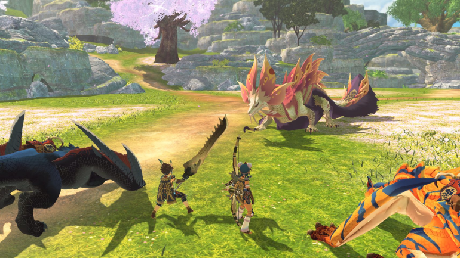
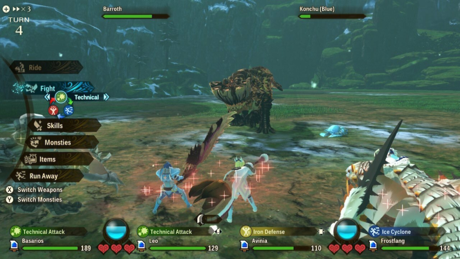
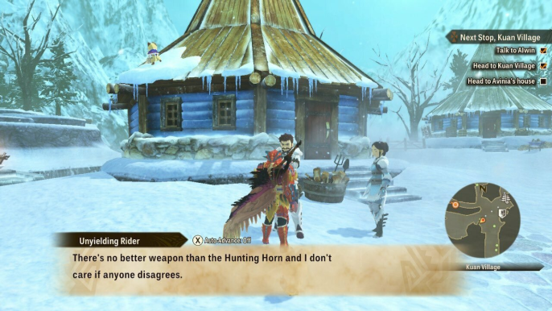

Análisis de Monster Hunter Stories 2: Wings Of Ruin - "Monstie Hunter"
Análisis de Monster Hunter Stories 2: Wings Of Ruin - "Monstie Hunter"
El nuevo spin-off de Monster Hunter de Capcom es un JRPG sólido para aquellos que disfrutan recolectando y criando monstruos.
Autor : Kevin Knezevic Publicado: 9 de julio de 2021
Con Monster Hunter Stories de 2016 para 3DS, Capcom transformó su serie de caza de monstruos en tiempo real en algo dramáticamente diferente: un colorido juego de rol de recolección de monstruos por turnos. A pesar del marcado cambio en el tono y la jugabilidad, Stories ofreció una nueva perspectiva del universo Monster Hunter, lo que la convirtió en una alternativa agradable a la serie principal. Su seguimiento, Monster Hunter Stories 2: Wings of Ruin, sigue en gran medida la plantilla que estableció el juego 3DS original y, a pesar de algunos elementos repetitivos, es otro derivado sólido de la franquicia.
Al igual que su predecesor, Monster Hunter Stories 2 intercambia la matanza de monstruos por la recolección de monstruos. En lugar de convertirte en un cazador, el juego te pone en las botas de un jinete novato, alguien que es capaz de formar vínculos con monstruos y luchar junto a ellos. Si bien aún necesitarás cazar muchos monstruos durante tu viaje, pasarás la mayor parte del tiempo explorando guaridas y recolectando nuevos compañeros "monstruosos" que puedes criar y llevar a la batalla. Esto hace que Monster Hunter Stories 2 esté fundamentalmente más cerca de Pokémon que de un título tradicional de Monster Hunter, pero el juego se desarrolla de manera muy diferente a la serie de captura de monstruos de Nintendo.

Monster Hunter Stories 2: Wings of Ruin
Lo más importante es la forma en que recolectas monstruos. En lugar de domesticar a los salvajes, obtienes nuevos monstruos ingresando a las guaridas de monstruos y recolectando sus huevos. Estos surgen al azar cada vez que te adentras en el supramundo y vienen principalmente en dos variedades: madrigueras estándar y madrigueras "raras" doradas que normalmente contienen mejores huevos. Independientemente de su tipo, las guaridas en sí son bastante rudimentarias en términos de su distribución; más allá de algunas rutas de ramificación ocasionales (que generalmente solo conducen a tesoros opcionales), no hay acertijos ambientales reales que resolver, por lo que no son particularmente convincentes para explorar por sí mismos. A pesar de esto, el encanto de descubrir nuevos tipos de huevos nunca envejece y hace que, en última instancia, valga la pena recorrer las madrigueras, especialmente a medida que avanzas en la historia y comienzas a encontrarte con monstruos más geniales.
Además de las guaridas de monstruos regulares, cada área principal del juego también presenta un puñado de mazmorras más grandes llamadas Everdens. Estas son mucho más laberínticas que las guaridas estándar y albergan algunos tesoros únicos, como huevos raros y tapas de botellas, que se pueden intercambiar por artículos especiales y mejoras, como un mayor espacio de almacenamiento para tus monstruos. Estas actualizaciones hacen de los tapones de botella uno de los productos más valiosos del juego, pero no es tan satisfactorio encontrarlos. Al igual que las guaridas normales, los Everdens no ofrecen mucha variedad, por lo que terminan sintiéndose iguales y no es particularmente agradable navegar. Además, gracias a sus caminos sinuosos, a menudo te toparás con varios callejones sin salida antes de localizar el nido de monstruos, lo que en última instancia hace que Everdens sea más una tarea para explorar que las guaridas normales.
Una vez que hayas obtenido un huevo, puedes llevarlo a los establos y criar un nuevo monstruo. Dependiendo de la rareza y el peso del huevo, el monstruo que obtengas contará con diferentes genes, lo que determina qué habilidades y ataques podrá usar durante la batalla. Estos genes son cruciales si quieres sacar el máximo partido a tu monstruo y se convierten en una especie de minijuego en sí mismos. Si alineas tres genes del mismo color, obtendrás una bonificación de bingo, que potenciará aún más tu monstie. También puede pasar genes entre monstruos a través de un proceso llamado Rito de Canalización. Esto ofrece una agradable cantidad de flexibilidad en la forma de personalizar las habilidades de su monstie, y se siente gratificante jugar e idear nuevas combinaciones.

Monster Hunter Stories 2 adopta un enfoque más táctico del combate en comparación con otros juegos, lo que te permite elegir tus ataques y movimientos de apoyo en encuentros por turnos.
Your monsties primarily come in use in battle. Unlike the mainline series, encounters in Monster Hunter Stories 2 are turn-based. While there are elemental weaknesses and advantages to consider, battles primarily revolve around three different types of attacks: power, speed, and technical. Each type has an advantage over another: speed bests power, power beats technical, and technical overcomes speed. The crux of battles, then, becomes figuring out which type of attack the enemy monster will use and swapping in the right monstie to counter it. It's a simple yet satisfying system, and the game keeps it fresh by frequently introducing new kinds of monsters with different attack patterns to battle.
The weapons you use also play a crucial role in combat. Weapons similarly fall into three varieties: slash, pierce, and blunt. This opens an additional layer of strategy. Different parts of a monster are susceptible to a particular type of weapon, so you'll need to swap out weapons frequently during the course of the battle and target specific parts to deal the most damage. Attack a part enough times, and you will eventually break it, causing the monster to drop a material and topple over. While a monster is prone on the ground, each attack you land will deal critical damage, and you can even halt some monsters from unleashing their strongest attacks by breaking a specific part of their body. These wrinkles make battles feel consistently enjoyable, and the game boasts some nice quality-of-life features, such as the ability to fast-forward animations and even end battles against lower-level foes immediately to mitigate the grind.
Beyond their in-battle abilities, each monstie can also perform a certain action while you ride them out in the field, which will help you reach some otherwise inaccessible areas; the Yian-Kut-Ku, for instance, can smash rocks that are blocking the path, while the Tigrex can clamber up ivy-covered walls. However, these riding actions are disappointingly underutilized during the main adventure. Rather than opening up new pathways to explore, these skills are typically used to reach out-of-the-way treasure chests, whose contents are often underwhelming. As a result, the field skills feel largely unnecessary and don't really add anything to the experience.

Entre expediciones, puedes explorar ciudades para hablar con aliados que pueden ofrecerte consejos y servicios que te ayuden a mejorar tus posibilidades en la naturaleza.
The weakest element in Monster Hunter Stories 2, however, is ironically its story. While the narrative is certainly more involved than a traditional Monster Hunter game, it largely stays within JRPG tropes and is fairly predictable as a result. The story also skews toward a younger audience, as evidenced by Navirou, your cartoonish, wise-cracking Felyne companion. Since your avatar never speaks, Navirou takes up most of the dialogue in your stead, and he frequently straddles the line between cute and annoying. That said, the story does broach some themes that the mainline series never explores, such as the seemingly incompatible worldviews of hunters and riders, and it's filled with humorous and touching moments.
Overall, Monster Hunter Stories 2: Wings of Ruin is an enjoyable Monster Hunter spin-off and an all-around solid JRPG, particularly if you enjoy games like Pokemon. While the title retains some of the series' hallmark elements, its emphasis on monster collecting and its fun turn-based battle system make it a decidedly different experience than Monster Hunter Rise, one that even those who've struggled to get into the proper Monster Hunter series can enjoy.
- Descubrir huevos nuevos y raros es siempre emocionante
- El sistema de batalla por turnos es fácil de aprender y ofrece algunas capas de estrategia satisfactorias.
- El sistema genético es flexible y te permite ajustar los monsties a tu gusto.
- La historia es bastante cliché y predecible
- Las guaridas carecen de variedad y pueden ser tediosos de explorar
- Las acciones de conducción se sienten infrautilizadas